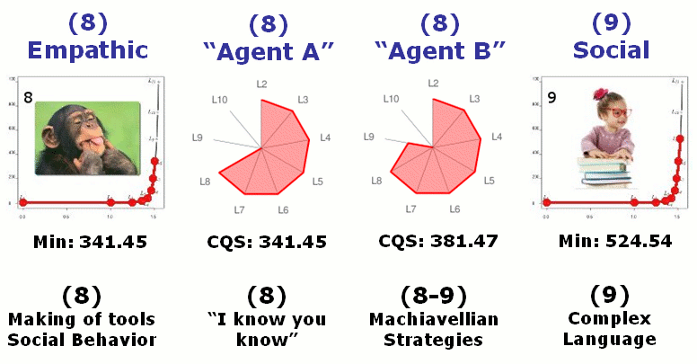

Home | Calculator | Levels | CQS | FAQ | Papers | Code | CR
ConsScale is a biologically-inspired scale for measuring cognitive development in natural and artificial creatures.
ConsScale has been specifically designed for the evaluation of Machine Consciousness implementations. Each level is characterized by architectural and behavioral criteria. Try the ConsScale Calculator to discover how creatures are rated in the scale.

Summary of ConsScale Levels of Consciousness
ConsScale characterizes the cognitive power of a creature providing a multiple dimension assessment:
A conceptual level of consciousness (the ConsScale level)
A cognitive profile (radar chart)
A quantitative score (the CQS)
ConsScale enables comparative analysis of different intelligent/conscious creatures:
See the related papers and FAQ for more details about ConsScale.
Please, send any questions, critiques, or comments to Raúl Arrabales.

This work is licenced under a Creative Commons Licence.